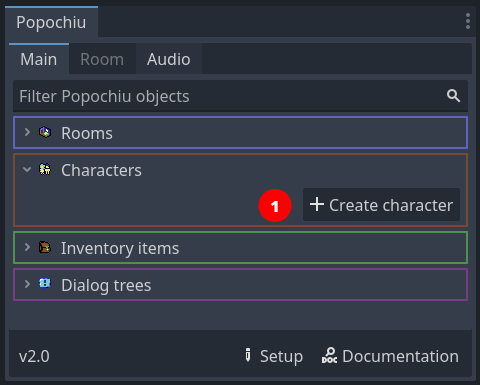
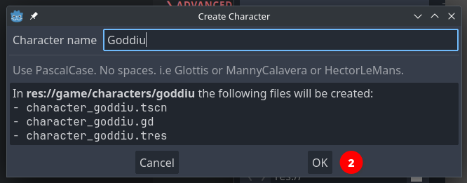
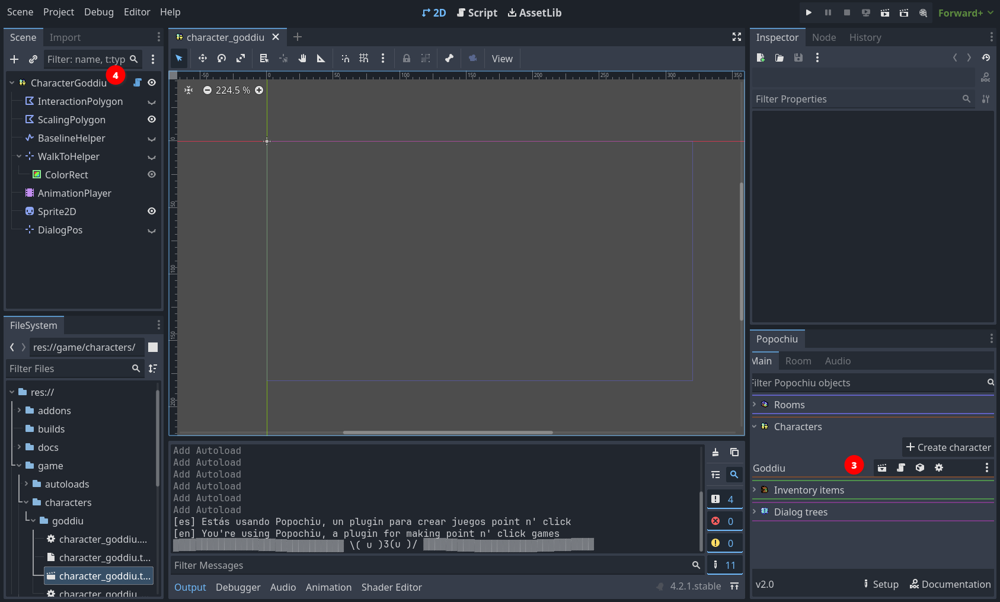
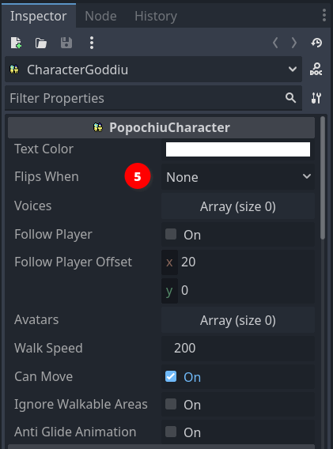
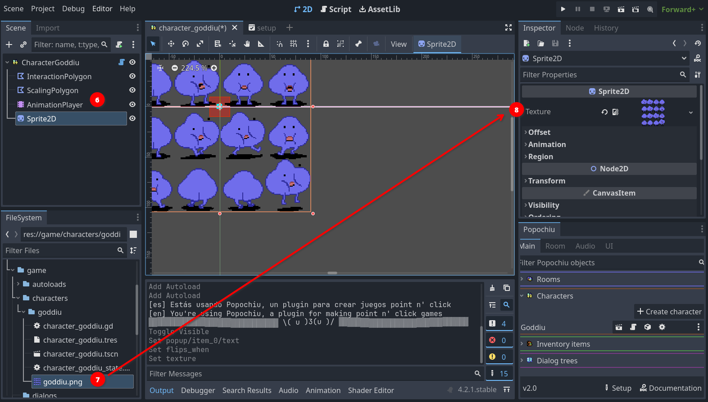
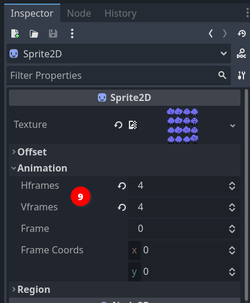
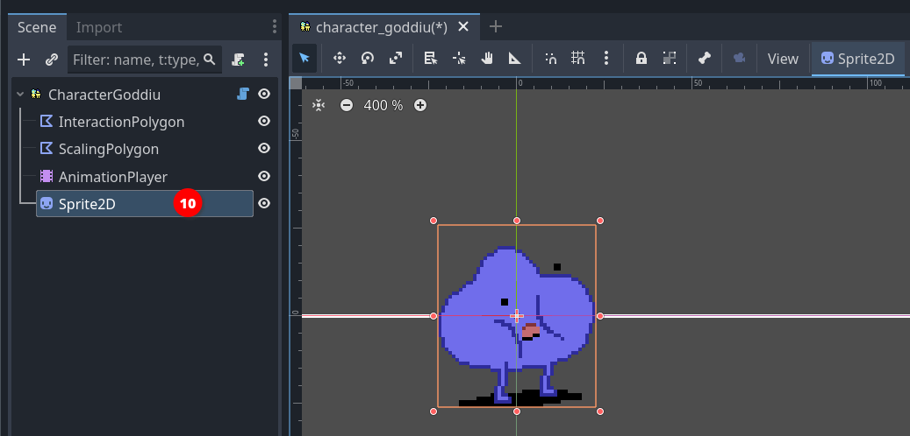
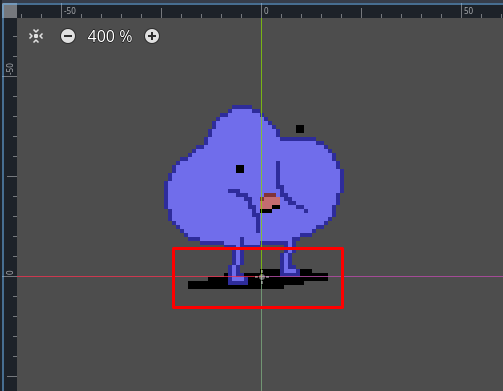
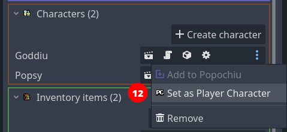

Create characters
Characters are one of the basic elements of Popochiu, being the bread and butter of every adventure game.
Let's start creating the player character. In the Popochiu main dock, click the Create character button (1).

A popup will appear, asking for the character name. This is the machine name of your character, not the one the player will see ingame, and it needs to be written in PascalCase (no spaces or punctuation and all capitalized words).
Once you entered the name, click the OK button (2).

As you can see the editor is giving you a preview of the files and assets that will be created. If everything went well, your editor should look like this now:

The new character appears in the main dock list (3) and the related scene is open in the editor (4).
Now click on the scene's root node (it should be named Character<YourCharacterName>) to access the character's properties in the inspector:

Set the Flips when parameter (5) to Looking Left, and leave the rest untouched.
Warning
The suggested value is based on the example sprite direction (right). If you are using a self-made sprite for your character and it's facing left, you should set this property to Looking right instead.
The character scene shows nothing. That's because we've set no sprite for our character. Popochiu characters support a full set of standard and custom animations, but since we are only stubbing the game, we'll just set a static sprite for now.
If you don't have a sprite sheet ready for your character, you can download this one from the demo game.
Save it into your project, in the game/characters/<your character name>/ folder, and rename it as you see fit.
{kind=link}
Tip
You can save the spritesheet anywhere in your project, but keeping it in the Character folder makes the project structure more tidy and maintainable. You may want to create subfolders to organize assets, but we strongly advise starting simple and reorganizing only when it's necessary.
To set the character sprite, go back to your editor and select the Sprite2D node in your character's scene (6), then locate your sprite sheet filename in your file manager (7). Select and drag it to the Texture property in the inspector (8).

You can see from the screenshot that the entire image is now visible in the Character scene. Of course, we want to select just a single sprite from the sprite sheet. For that, head to the Animation section in the inspector and set Hframes and Vframes values to match the number of sprites in the sprite sheet, like this (9):

Now the sprite on the scene should be OK, showing your character in the standing position. We just miss a little change to make things work as intended: when a new character is created, its sprite is centered on the scene origin:

This is a problem because the scene origin point is the one that the engine will check to understand if the character is still inside a walking area, or if it reached a certain position when moving around the scene. In short, the scene origin should be where the character's feet are.
Fixing this is as simple as selecting the Sprite2D node in the character scene (10), and moving it so that the origin is in between the two feet, like in the image below.

Tips for great character sprite positioning
Most game characters' idle position is depicted in a three-quarter view. In this type of shot, the foot facing the camera will be slightly lower than the foot pointing to the side of the sprite (look at Goddiu above). To achieve perfect results when positioning your sprite, you should position the side-facing foot on the zero line, and the camera-facing foot toe should be a bit lower.
In the case of floating characters (ghosts, fairies, anti-gravity-powered mad scientists, etc), you should leave some vertical space between the scene's center and your character. Try to envision the scene line as the "floor" and decide how high above the floor the character should float.
The last thing to do is to position the place where the dialog text will be shown for the talking character. Popochiu can be customized to show dialog lines in many different positions or fashions.
The GUI template we selected shows the dialog lines as a caption at the bottom of the screen, but other ones show the dialogue lines somewhere above the character's head. We are going to see how to position the text for those interfaces that use the over head dialogues style.
Since the engine doesn't know how high your sprite is (see "Under the hood" note below), that's for you to decide.
For this, select the character's root node in the scene tree, and you will see a small purple square at the scene's origin. Drag it somewhere above the character's head (or wherever makes sense to you). As you see the square is labeled and connects to the element it refers to.
If you see no square, make sure the Dialogue Position Gizmo is visible by checking the state of the button in the toolbar (11).

Finding the best positioning for the "voice" of each character may require a bit of trial and error, but for now, this will do.
Under the hood
You may be wondering how exactly the text is positioned in relation to the Dialog Position gizmo. Here is an explanation of how Popochiu decides how your text is rendered.
- The baseline of the text will always match the vertical position identified by the gizmo, so the text will be rendered vertically right above that point.
- The dialog line length is calculated and the text is centered on the horizontal position of gizmo, so the text will be rendered horizontally around that point.
- If the text spans multiple lines, Popochiu will expand it towards the top, so that it doesn't cover your character (this means if you want your text under the character for some reason, multiple lines will cover your character).
- If the character is near the window or screen border, the text will be repositioned so that it will be entirely visible, so you don't have to worry about it becoming unreadable. This is true both for horizontal and vertical coordinates. Of course, long texts may overlap the character sprint in that case, but it's for good.
Add another character
We are almost done creating our player character. Before moving on, follow the same steps to create another one, to keep our main character company and test some interaction.
Tip
In the example game, the second character is named Popsy and its sprite can be found here.
{kind=link}
Select the main character
Now that we have two characters, it's time to tell Popochiu which one will be our main character. That's the one that will be used by the player.
To do this, locate the first character you have created in Popochiu main dock (in our example it was Goddiu), open the drop-down menu, and select Set as Player Character (12).

Multiple character games
Even if we are not going to cover this detail, Popochiu supports multiple player characters in the style of Maniac Mansion or Day of the Tentacle. It's as easy as programmatically changing a variable from your scripts.
Pat yourself a shoulder! You have successfully created your first characters.